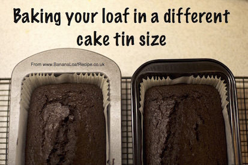
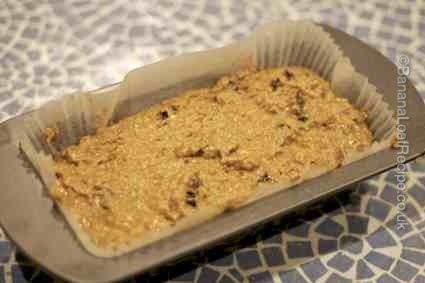
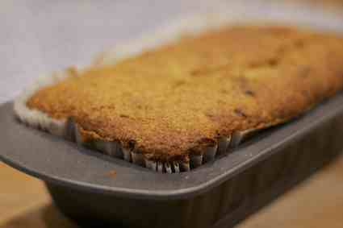

We refer throughout this article to our special banana loaf recipe, the founding recipe of our website and the most delicious banana loaf cake you’ll ever eat. If you haven't yet tried it, print out the recipe and givei it a taste. Despite the regular references to this particular recipe, however, the advice we give here applies to baking any cake.

What size are 2lb and 1lb loaf tins?
As a rough guide, a 2lb (900g) loaf tin is about 21cm long, 11cm wide and 7cm high (8 x 4 x 3 inches approx) and a 1lb (450g) loaf tin is 16cm long, 11cm wide and 7cm high (6 x 4 x 3 inches). They do vary quite a bit from brand to brand but this should help you understand what you have got if you have one already. Please beware the difference between internal and external measurements, since a protruding lip will affect measurements - try to ignore this when measuring. If you prefer, you can measure the volume of water your tin holds. As a general rule, a 1lb (450g) tin will hold about 1.5 pints (850ml) of water. A 2lb (900g) tin will hold somewhere between 2 pints (1100mls) and 2.5 pints (1400mls); some hold even more, depending on the tin shape.
What about other cake tin sizes?
If you haven’t got a loaf tin at all, but have a square cake tin or a round tin, the standard sizes are 7” (18cm), 8” (20cm) and 9” (23cm). Measure your tin and use our advice below to consider the impact this may have on your baking.
If you don’t have a 2lb Loaf Tin
Our banana loaf recipe uses a 2lb (900g) tin size. This is the optimal loaf tin size for this particular recipe but that’s not to say you can’t get good results from a different tin size - or even from a different shape. However, you will be entering into the realm of “experimental baking” if you deviate from this aspect of the recipe so take a deep breath and prepare to be flexible - and accept that the first time you bake this recipe with the wrong size tin, the results may not be absolutely perfect. But we’ll bet they’ll be pretty good!
If you are wanting to buy a 2lb (900g) loaf tin, please take a look at our reviews of loaf tins and other baking equipment.
Does the loaf tin size really matter?
You may be thinking - “but surely, I’ve made the same amount of cake mixture. Won’t it cook in the same amount of time whatever the tin size?” The short answer, is “no, it won’t”. If you were defrosting a big block of snow and ice, it would take longer to melt than the same amount of snow spread out on the grass or pavement (think how a snowman lingers in the garden as the weather warms up). Similarly, if you cook cake mixture in a densely filled cake tin, it takes longer to cook than if you cook it in a wider and longer tin - then, the mixture is less deep, less dense and cooks more quickly.

Using a 1lb tin in place of a 2lb tin
As its name suggests, a 1lb loaf tin takes half the amount of dough of a 2lb loaf tin. If you only have a 1lb loaf tin, we recommend either halving the quantities in the recipe or making all the mixture and baking two 1lb cakes one after the other. It may be tempting to put the full quantity of mixture into the 1lb loaf tin at once but with eggs and baking powder in the mixture, your cake should rise. And using such a small tin will result in the cake overflowing the tin and making a mess of your oven!
Despite the smaller dimensions of the 1lb tin, the depth and density of your 1lb loaf made with half the mixture will not be that dissimilar to that of the 2lb loaf. As a result, the cooking time for the 1lb loaf will not be much slower than the 2lb loaf. We would suggest approximately 50 minutes for the 1lb loaf rather than the full hour for the 2lb loaf - perhaps check by sight and smell after 40 minutes to be sure. Please see our article How to Bake the Perfect Loaf Cake for more help on this.
Cooking Time for other Cake Tin Sizes
If you’re not using the correct tin size, the main thing to keep an eye on with your cake is the cooking time. If your chosen tin is longer and/or wider than the tin size suggested by the recipe (eg a square or round cake tin), then your mixture will be less deep, so you would expect it to cook more quickly. If your tin dimensions are shorter than those suggested, then your mixture will be deeper, so the mixture will be denser and will take more time to cook.
The absolute key to a successful outcome is to keep checking on your cake regularly, using a kitchen time to remind you. Try to avoid opening the oven door unless you really have to as you may cause your cake to sink - rather, watch it through the oven door. Once it starts to look and smell cooked, you can carefully and gently open the oven door to avoid a sudden influx of cold air and test your cake with a skewer. If the skewer comes out clean, your cake is cooked. If there is still mixture on the skewer, you need to put the cake back in the oven for another five minutes and then keep checking on it as before. Please see our article How to Bake the Perfect Loaf Cake for more help on this.

My cake is browning on top too quickly!
If you have increased the density of the cake mixture in the tin, possibly by using a smaller but deeper tin, you may find that the cake isn’t cooking evenly. If you are watching your cake, it is browning on top and looking very cooked, but a skewer won’t come out clean, you may wish to put a folded piece of baking parchment or greaseproof paper over the top of your cake in the oven. This will slow down the browning and may buy you enough time to ensure the mixture in the tin is all cooked.
My cake is overflowing the cake tin!
If you put your cake into the oven, thinking all is well and then it rises…and rises…and rises over the top of the tin and starts flowing over, then you have probably overfilled your cake tin! A good rule of thumb is to never fill a cake tin more than two thirds (2/3) full. This will allow for space for the cake to rise in the tin without over-flowing. If you have used a smaller tin than stated in the recipe, consider baking two cakes in a row, using half the mixture each time.
.
Adjusting Temperature
If your first experiment with your chosen tin size was not successful, you may need to try the recipe again but also altering the oven temperature. This particularly applies if you have increased the density of the cake mixture in the tin as in the example above, and needed to use baking parchment to stop it from burning on top. Lowering the oven temperature the next time you bake the recipe may result in more even cooking of the mixture, with the middle cooking as the top browns, rather than a burnt top and a raw middle.

{kind=link}
{kind=link}